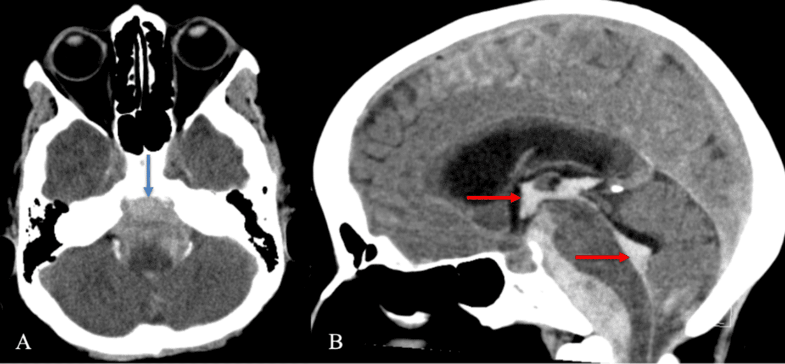

Página 4 · E4
Idade, súbito e trovoada
Cefaleia nova aos 55–60 anos. Por que isso já é estranho para primária?
Alarme → secundária
Diante de sinal de alarme, a hipótese dominante vira cefaleia secundária e é preciso investigar o que está causando a dor. Os eixos essenciais são tempo e padrão vascular, despertar pela dor, sinais sistêmicos e contexto clínico.
Idade 50 · 55 · 60
Idade avançada como alarme: acima de 50–55 anos, incluindo o cenário clínico aos 60. Cefaleias primárias costumam surgir em pessoas jovens. Um idoso pode abrir enxaqueca aos 60 anos — pode, mas não é o padrão. Cefaleia nova que abre em paciente de 55–60 anos fica estranha para primária: investigar outras causas (secundária até prova em contrário). A partir dessa faixa, condições mais graves (ex.: tumor) passam a ser mais prevalentes.
O corte formal de red flag etária nas diretrizes brasileiras consultadas é “após os 50 anos” (Older do SNOOP). As idades de 55 e 60 permanecem na mesma zona de alarme; elas reforçam o risco sem substituir nem competir com o corte formal.
Súbito = vascular
Cefaleia de início súbito é sinal de alarme. Toda vez que se vê súbito em neurologia, o raciocínio remete a fenômeno vascular — e na cefaleia não é diferente. Causas vasculares no eixo súbito: hemorragia subaracnoide; hemorragia intraparenquimatosa; trombose de seio venoso. O raciocínio do súbito não se esgota na HSA: intraparenquimatosa e TSV entram na mesma família mental.
Trovoada = duas propriedades
Cefaleia em trovoada: surge de maneira súbita e rapidamente atinge o seu pico. Não basta “dor forte”. HSA pode produzir trovoada. Trovoada é sinal de alarme.

Quiz — fixação
-
Cefaleia em trovoada exige:
Gabarito B. trovoada é tempo (súbita + pico rápido), não sinônimo de “forte”.
(A) intensidade sem cronologia não fecha o conceito. (C)(D) são outros alarmes, não a definição de trovoada. Cai na A porque a banca e o leito usam “pior dor” sem olhar o relógio de instalação.
-
Cefaleia nova que abre aos 55–60 anos:
Gabarito B. primária costuma nascer em jovens; abertura tardia é red flag, mesmo se enxaqueca “pode” existir.
(A) invertido. (C) idade aumenta a chance de grave, não dispensa. (D) nome de primária sem triagem. Cai em (A) porque “pode ter enxaqueca aos 60” vira “é padrão”.
-
“Súbito em neuro” na cefaleia puxa o eixo:
Gabarito B. súbito ≈ vaso — e o eixo vascular inclui três entidades, não só HSA.
(A)(C)(D) não são o eixo do súbito vascular. Cai por memorizar só HSA e esquecer TSV/parenquimatosa.